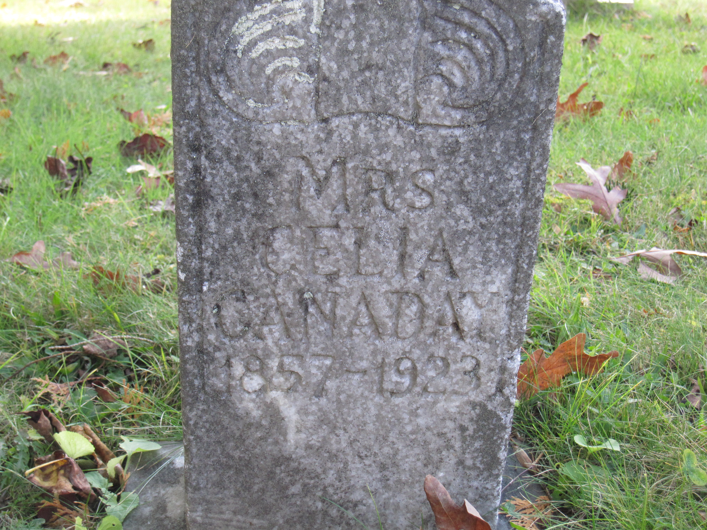

Marinda Celia Lilly
6 July 1854 – 26 June 1923
Lilly line · Pemberton → Beckley, West Virginia
Profile status: SUPPORTED
Quick Facts
Born
6 July 1854, Wyoming County, West Virginia DOCUMENTED (Wyoming County birth register, row #14, read directly: father Andrew Lilly, mother Marinda Lilly; the register date differs from Ancestry’s 7 July 1854 by one day; the profile document’s and Geni’s 7 July 1853 is contradicted on the year; her marker reads 1857, a carver’s error)
Died
26 June 1923, Beckley, Raleigh County, West Virginia SUPPORTED (her obituary in the Beckley Raleigh Register, 6 July 1923, and her Find a Grave memorial; her death certificate sits on State Archives microfilm and has not been pulled — Geni disputes the 1923 death, see Research Notes)
Buried
Canaday Cemetery, Glen White, Raleigh County, West Virginia SUPPORTED (Find a Grave memorial 137867617; her obituary says funeral services were held at the Canaday cemetery near Crab Orchard)
Married
William Jacob Canaday — 25 September 1878, Raleigh County, West Virginia
DOCUMENTED (Raleigh County Register of Marriages, 1878, entry No. 57, read directly; the register does not name her parents; the 2 September and 28 July dates are not supported by the register)
Occupation
No occupation recorded
Religion
Baptist SUPPORTED (her obituary: a member of the Baptist church)
Military
No military service
Immediate Family
Parents
Andrew H. “Sockhead” Lilly SUPPORTEDMarinda Walker SUPPORTEDHer parentage is the unanimous word of every compiled source checked, though no primary record naming her parents has been viewed yet. Geni’s About text calls her placement as Andrew and Marinda’s daughter a tree-level reconstruction, not proven, and treats it as uncertain. The name “Marinda Celia Meadows” in one compiled account is supported by no record anywhere and is not used.
Spouse
William Jacob Canaday (1852–1927), married 25 September 1878
SUPPORTEDNo other marriage. The Souder spouse carried for her on FamilySearch and in Tricia’s Ancestry tree (married about 1875, Mercer County) is a conflation — a Souder married her sister Nancy Elizabeth.
Children
Roberta Lora Harper (Canaday) (1879–1935, married a Harper)
SUPPORTEDJames M. Canaday (1881–1899)
SUPPORTEDOverton Delaware Canaday (1883–1900)
SUPPORTEDGenettie Ellen Canaday (6 February 1885–23 January 1970) — the direct line
SUPPORTEDLonda Everet Canaday (1887–1941)
SUPPORTEDCompiled dates. James and Overton died as teenagers, a year apart at the turn of the century. Londa is called “Lundy,” a son, in his father’s obituary; Geni spells him “Lundie.” Genettie’s birth record reads 6 February 1885; Geni gives 5 February and spells her “Genetta Ella.”
On Family Tree Sites
Life Timeline
6 July 1854
Born, Wyoming County, West Virginia DOCUMENTED (birth register, row #14, parents named)
25 September 1878 · age 24
Married William Jacob Canaday, Raleigh County DOCUMENTED (Register of Marriages, entry No. 57, read directly)
1879–1887
Five children born: Roberta Lora, James M., Overton Delaware, Genettie Ellen — the direct line — and Londa Everet SUPPORTED (compiled dates)
26 June 1923 · age 69
Died at her home in the Sylvia section of Beckley, after a long illness from cancer SUPPORTED (obituary, Beckley Raleigh Register, 6 July 1923; Find a Grave memorial 137867617)
1923
Funeral services at the Canaday cemetery near Crab Orchard; her remains laid there to rest SUPPORTED (obituary)
Life Story
Marinda Celia Lilly was born on 6 July 1854 in Wyoming County, West Virginia, the daughter of Andrew H. “Sockhead” Lilly and Marinda Walker. Her parentage is the unanimous word of every compiled source checked, though no primary record naming her parents has been viewed yet. On 25 September 1878 in Raleigh County she married William Jacob Canaday. They had five children: Roberta Lora, James M., Overton Delaware, Genettie Ellen — the direct line — and Londa Everet. James and Overton died as teenagers, a year apart at the turn of the century.
Marinda lived most of her life in Beckley and was a member of the Baptist church. She suffered from cancer for ten months, and died at her home in the Sylvia section of the city on Tuesday, 26 June 1923, aged 69. Her funeral services were held at the Canaday cemetery near Crab Orchard, and her remains were laid there to rest beside her husband’s. Her marker reads 1857–1923.
Sources and Evidence
- Obituary, Beckley Raleigh Register, 6 July 1923 (photograph filed in the couple folder, read with my own eyes): “Mrs. Marinda Canaday, wife of William J. Canaday, died at her home in the Sylvia section of the city Tuesday, June 26th, following a long illness from cancer. Her age was 69 years”; a member of the Baptist church; funeral services at the Canaday cemetery near Crab Orchard SUPPORTED
- Her husband’s obituary, Beckley Post-Herald, 22 January 1927: “His wife died in June, 1923” SUPPORTED
- Find a Grave memorial 137867617, Marinda Celia Lilly Canaday: born July 1853, Pemberton; died 26 June 1923, Beckley; buried Canaday Cemetery, Glen White; marker photographs (2014 and 2017, read with my own eyes) both show the marker reading 1857–1923 SUPPORTED
- Her husband’s West Virginia death record (died 21 January 1927, Beckley): names his wife “Marinda C. Lilly” DOCUMENTED
- Marriage: Raleigh County Register of Marriages, 1878, entry No. 57, read directly: 25 September 1878; groom “Wm J. Canady,” 26, born Patrick Co., Va.; bride “Marinda C. Lilly,” 24, born Mercer Co., WVa.; parents not named DOCUMENTED
- Geni profiles, click-verified 4 November 2026: Marinda Celia Canaday (Lilly), born 7 July 1853, Pemberton; daughter of Andrew H. “Sockhead” Lilly and Marinda Walker; wife of William Jacob Canaday; mother of Roberta Lora Harper, James M., Overton Delaware, Genetta Ella McKinney, and Lundie Everet Canaday SUPPORTED
Research Notes and Open Questions
- Grades on this page: DOCUMENTED means an original record was read (her husband’s death record naming her); SUPPORTED means a claim attested by filed research — the obituaries, the compiled account, Geni checks — but not by a register read here.
- Death date: the page carries 26 June 1923. Geni shows her death only as “before 21 January 1927,” with a research note (27 September 2026) saying a candidate 1923 “Ceelia” death proved to be a different woman — a widow while William Jacob Canaday was still living — and that no West Virginia death record for her has been found. Against that note stand two contemporary obituaries: her own, naming her “Mrs. Marinda Canaday, wife of William J. Canaday,” dead “Tuesday, June 26th” (26 June 1923 was a Tuesday), aged 69; and her husband’s, saying “His wife died in June, 1923.” Her Find a Grave memorial and her marker both give 1923. Her death certificate sits on State Archives microfilm and has not been pulled; pulling it would settle the matter at record level.
- Birth year: the page now carries 6 July 1854, from the Wyoming County birth register (row #14, read directly: father Andrew Lilly, mother Marinda Lilly). The profile document’s and Geni’s 7 July 1853 is contradicted on the year. Her marker reads 1857, a carver’s error. Her obituary’s age of 69 at her June 1923 death points to 1853 or 1854. Ancestry gives 7 July 1854, one day off the register.
- Parentage: compiled-grade only — no primary record naming her parents has been viewed yet. Geni’s About text calls her placement as Andrew and Marinda’s daughter a tree-level reconstruction, not proven. Her 1923 death certificate, when pulled, should name her parents.
- Marriage day: the register gives 25 September 1878 (Raleigh County Register of Marriages, 1878, entry No. 57, read directly). The compiled account and WikiTree gave 2 September 1878; Tricia’s Ancestry tree cites the West Virginia Marriage Records index giving 28 July 1878 — neither is supported by the register, which does not name her parents.
- Souder: the Souder spouse carried for her on FamilySearch and in Tricia’s Ancestry tree (married about 1875, Mercer County) is a conflation — a Souder married her sister Nancy Elizabeth. Nothing was detached or changed on those accounts in this pass.
- Tricia’s Ancestry tree: the tree Marinda is NOT this woman. Its Marinda was born 27 April 1854, daughter of John Lewis Lilly and Martha Ann Stump, and its seven children (born 1892–1905) do not overlap this couple’s five at all. Nothing from the tree was adopted; the full comparison is filed in the couple folder.
- Genes Reunited is not carried for now — it is deferred to a later pass. No MyHeritage profile is listed in the research folder, so no MyHeritage tile is shown here.
- Photographs: no portrait of Marinda has been found. Her marker photograph is the only picture of her, so it stands as her profile picture. A second marker photograph (2017) and her obituary photograph are filed in the couple folder; the obituary is cited above, not shown as a picture.